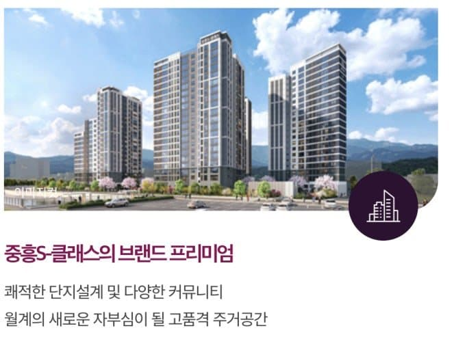
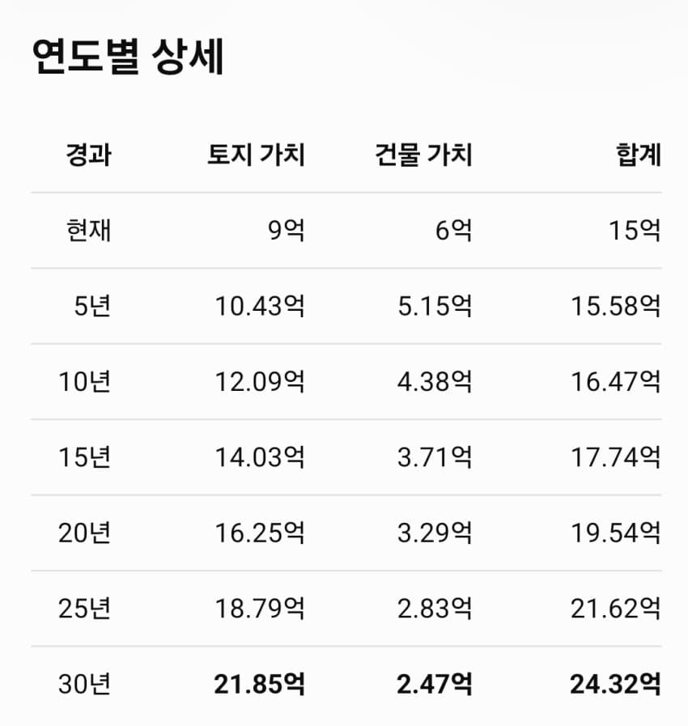
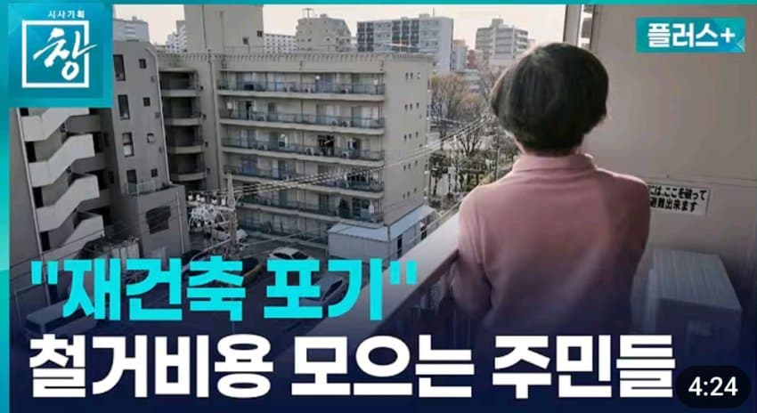
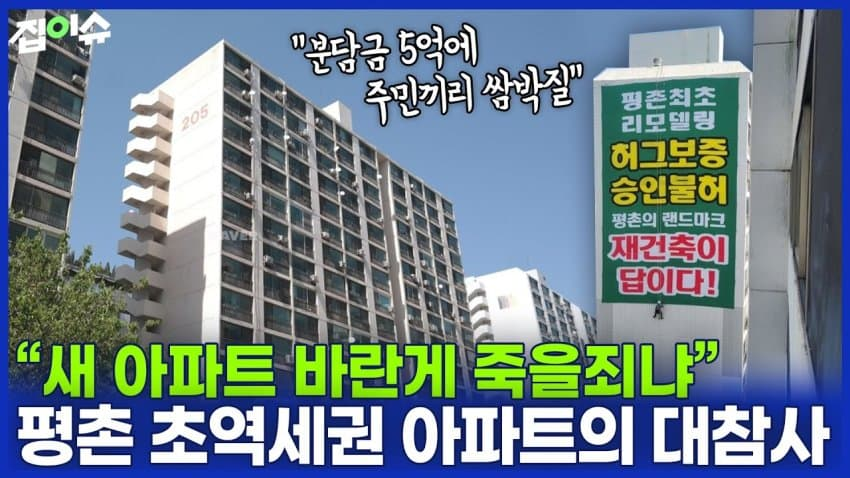

노원 중흥 아파트 15억.
그 아파트 단지를
거대한 하나의 건물로 보면,
땅값이 60%
건물 값이 40%

너의 아파트 15억.
땅값은 9억. 건물값은 6억.
땅값은
매년 3% 씩 올라서
30년후 21.85억이 되고
건물값은
매년 3%씩 감가를 쳐 맞아서
30년후 2.47억이 된다.
합계 24억 따리가 된다.
이러면 해피엔딩 돈복사지 ㅋㅋㅋ
인생이 쉬워?
30년후,

철거비용이나 모아 이새끼들아 ㅋㅋㅋ

새 아파트 바란게 죽을 죄냐?
아니 그건 죄가 아니야 ㅋ
니가 공짜로 새 아파트를 받으려고 한게 죄지 ㅋㅋㅋ
재건축이 불가능 한 이유?
공짜로 안 주면 재건축 반대하거든 ㅋㅋㅋ
돈이 없으니까.
- dc official App
댓글
수집 당시 댓글 371개
· 여전사이은해 · 11.28 18:13:59
ㅇㅇ · 11.28 16:42:20
ㅇㅇ · 11.28 16:42:39
ㅁㄴㅇ · 11.28 16:42:47
· ㅇㅇ · 11.28 16:44:51
· ㅇㅇ · 11.28 17:39:13
· ㅇㅇ · 11.28 17:54:24
ㅇㅇ · 11.28 16:42:55
· ㅇㅇ · 11.28 18:28:00
히이잉 · 11.28 16:43:07
ㅇㅇ · 11.28 16:44:38
· ㅁㄴㅇ · 11.28 16:46:45
ㅇㅇ · 11.28 16:44:40
· ㅇㅇ · 11.28 18:19:19
· ㅇㅇ · 11.28 18:28:35
· ㅇㅇ · 11.28 19:47:51
ㅇㅇ · 11.28 16:44:45
은개님 · 11.28 16:45:48
· ㅇㅇ · 11.28 16:53:38
· 은개님 · 11.28 16:54:03
· ㅇㅇ · 11.28 17:13:23
· 은개님 · 11.28 17:13:53
... · 11.28 16:47:55
ㅇㅇ · 11.28 16:48:27
ㅇㅇ · 11.28 16:50:05
· ㅇㅇ · 11.28 16:50:54
· ㅇㅇ · 11.28 18:34:36
ㅇㅇ · 11.28 16:50:06
ㅇㅇ · 11.28 16:50:35
ㅇㅇ · 11.28 16:51:36
· ㅇㅇ · 11.28 17:29:03
VWVWV · 11.28 16:51:53
ㅇㅇ · 11.28 16:52:03
ㅇㅇ · 11.28 16:52:29
ㅇㅇ · 11.28 16:52:51
· ㅇㅇ · 11.28 17:14:44
· ㅇㅇ · 11.28 17:17:25
· ㅇㅇ · 11.28 17:19:17
히이잉 · 11.28 16:53:06
ㅇㅇ · 11.28 16:54:14
ㅇㅇ · 11.28 16:54:59
ㅇㅇ · 11.28 16:56:34
멋진남자 · 11.28 16:56:41
ㅇㅇ · 11.28 16:57:16
ㅇㅇ · 11.28 17:00:05
· 경쟁 · 11.28 17:07:02
· ㅇㅇ · 11.28 17:10:47
ㅇㅇ · 11.28 17:03:23
· ㅇㅇ · 11.28 17:30:32
ㅇㅇ · 11.28 17:06:01
ㅇㅇ · 11.28 17:07:01
ㅇㅇ · 11.28 17:07:43
ㅇㅇ · 11.28 17:10:28
· ㅇㅇ · 11.28 17:10:50
· 디씨망령 · 11.28 17:23:43
히이잉 · 11.28 17:11:08
ㅇㅇ · 11.28 17:12:33
· ㅇㅇ · 11.28 17:15:08
· ㅇㅇ · 11.28 17:19:08
· 아갤러 · 11.28 17:45:12
· ㅇㅇ · 11.28 18:02:31
· 마코토리 · 11.28 18:09:50
지열극나길자 · 11.28 17:21:38
인용구 · 11.28 17:24:27
ㅇㅇ · 11.28 17:29:30
ㅇㅇ · 11.28 17:32:25
ㅇㅇ · 11.28 17:33:35
ㅇㅇ · 11.28 17:34:57
ㅇㅇㅇ · 11.28 17:38:50
ㅇㅇ · 11.28 17:40:24
히이잉 · 11.28 17:41:13
ㅇㅇ · 11.28 17:41:33
ㅇㅇ · 11.28 17:52:30
ㅇㅇ · 11.28 17:53:00
· ㅇㅇ · 11.28 17:53:25
ㅇㅇ · 11.28 17:59:56
ㅇㅇ · 11.28 18:00:13
ㅇㅇ · 11.28 18:04:02
마코토리 · 11.28 18:07:57
· 마코토리 · 11.28 18:08:38
ㅇㅇ · 11.28 18:08:25
· ㅇㅇ · 11.28 18:12:03
ㅇㅇ · 11.28 18:10:53
ㅇㅇ · 11.28 18:25:22
· ㅇㅇ · 11.28 18:25:35
ㅇㅇ · 11.28 18:26:59
ㅇㅇ · 11.28 18:29:30
ㅇㅇ · 11.28 18:35:13
ㅇㅇ · 11.28 18:43:01
ㅇㅇ · 11.28 18:46:27
수붕이 · 11.28 18:49:28
ㅇㅇ · 11.28 19:06:41
ㅇㅇ · 11.28 19:12:18
· ㅇㅇ · 11.28 19:20:45
ㅇㅇ · 11.28 19:23:56
ㅇㅇ · 11.28 19:39:54
ㅇㅇ · 11.28 19:48:21
ㅇㅇ · 11.28 20:01:36
ㅇㅇ · 11.28 20:09:08
ㅇㅇ · 11.28 20:10:57
ㅇㅇ · 11.28 16:12:27
· ㅇㅇ · 11.28 16:14:45
· ㅇㅇ · 11.28 16:20:25
· ㅇㅇ · 11.28 16:22:15
· ㅇㅇ · 11.28 16:23:17
· ㅇㅇ · 11.28 16:25:41
· ㅇㅇ · 11.28 16:27:46
· ㅇㅇ · 11.28 16:29:11
· ㅇㅇ · 11.28 16:31:18
· ㅇㅇ · 11.28 16:35:55
삭제됨 · 11.28 16:12:43
· ㅇㅇ · 11.28 16:19:06
· ㅇㅇ · 11.28 16:22:22
· ㅇㅇ · 11.28 16:29:29
히이잉 · 11.28 16:13:07
ㅇㅇ · 11.28 16:14:36
· ㅇㅇ · 11.28 16:46:27
ㅇㅇ · 11.28 16:15:45
Doll · 11.28 16:16:14
ㅇㅇ · 11.28 16:16:28
· ㅇㅇ · 11.28 16:17:24
· ㅇㅇ · 11.28 16:20:16
· ㅇㅇ · 11.28 16:21:40
· ㅇㅇ · 11.28 16:22:33
· ㅇㅇ · 11.28 16:23:22
· ㅇㅇ · 11.28 16:35:06
· ㅇㅇ · 11.28 16:39:36
ㅇㅇ · 11.28 16:18:06
나조정호 · 11.28 16:18:33
ㅇㅇ · 11.28 16:18:40
ㅇㅇ · 11.28 16:18:54
· ㅇㅇ · 11.28 16:20:48
· ㅇㅇ · 11.28 16:28:37
ㅇㅇ · 11.28 16:19:22
· ㅇㅇ · 11.28 16:48:28
ㅇㅇ · 11.28 16:20:43
· ㅇㅇ · 11.28 16:21:12
· ㅇㅇ · 11.28 16:23:27
· ㅇㅇ · 11.28 16:28:07
· ㅇㅇ · 11.28 16:40:42
· ㅇㅇ · 11.28 17:34:11
ㅇㅇ · 11.28 16:22:36
· ㅇㅇ · 11.28 17:00:19
· ㅇㅇ · 11.28 17:05:40
맛간람쥐 · 11.28 16:23:03
히이잉 · 11.28 16:23:07
ㅇㅇ · 11.28 16:23:56
· ㅇㅇ · 11.28 17:06:43
ㅇㅇ · 11.28 16:24:04
ㅇㅇ · 11.28 16:25:27
· ㅇㅇ · 11.28 16:26:43
ㅇㅇ · 11.28 16:25:29
出産
227万↓
障害児
2万↑
ㅇㅇ · 11.28 16:25:44
韓女の
奇形児率は
伝説だ
ㅇㅇ · 11.28 16:26:12
ㅇㅇ · 11.28 16:26:13
· ㅇㅇ · 11.28 16:27:39
· ㅇㅇ · 11.28 16:31:02
· ㅇㅇ · 11.28 16:37:27
· 엳붕이 · 11.28 16:38:22
· ㅇㅇ · 11.28 16:39:16
· ㅇㅇ · 11.28 16:40:58
· ㅇㅇ · 11.28 17:34:18
· ㅇㅇㅇ · 11.28 17:35:48
ㅇㅇ · 11.28 16:26:51
ㅇㅇ · 11.28 16:27:05
· ㅇㅇ · 11.28 16:30:50
ㅇㅇ · 11.28 16:28:13
ㅇㅇ · 11.28 16:28:30
· ㅇㅇ · 11.28 16:32:58
· ㅇㅇ · 11.28 16:36:08
· ㅇㅇ · 11.28 16:37:37
· ㅇㅇ · 11.28 16:38:14
· ㅇㅇ · 11.28 16:39:38
· ㅇㅇ · 11.28 18:20:18
ㅇㅇ · 11.28 16:29:01
ㅇㅇ · 11.28 16:29:05
· ㅇㅇ · 11.28 16:32:05
· ㅇㅇ · 11.28 16:33:53
ㅇㅇ · 11.28 16:29:06
ㅇㅇ · 11.28 16:32:26
· ㅇㅇ · 11.28 16:34:46
· 땃다다 · 11.28 17:33:18
헌트 · 11.28 16:32:54
히이잉 · 11.28 16:33:08
ㅇㅇ · 11.28 16:34:17
님저초 · 11.28 16:35:46
· 님저초 · 11.28 16:38:41
· ㅇㅇ · 11.28 16:38:50
· ㅇㅇ · 11.28 16:54:11
ㅇㅇ · 11.28 16:37:48
모코코- · 11.28 16:38:55
· 모코코- · 11.28 16:39:18
· ㅇㅇ · 11.28 17:21:31
ㅇㅇ · 11.28 16:40:04
· ㅇㅇ · 11.28 16:41:10
· ㅇㅇ · 11.28 17:04:09
· 마코토리 · 11.28 18:11:35
ㅇㅇ · 11.28 16:41:35
· ㅇㅇ · 11.28 17:52:04
ㅇㅇ · 11.28 16:41:47
· ㅇㅇ · 11.28 16:01:33
· ㅇㅇ · 11.28 17:14:24
ㅇㅇ · 11.28 15:50:20
ㅇㅇ · 11.28 15:51:43
· ㅇㅇ · 11.28 15:52:53
· ㅇㅇ · 11.28 17:14:43
ㅇㅇ · 11.28 15:51:45
ㅇㅇ · 11.28 15:52:20
ㅇㅇ · 11.28 15:53:11
ㅇㅇ · 11.28 15:53:44
삭제됨 · 11.28 15:54:37
· ㅇㅇ · 11.28 15:56:34
· ㅇㅇ · 11.28 15:57:42
ㅇㅇ · 11.28 15:55:06
ㅇㅇ · 11.28 15:55:53
ㅇㅇ · 11.28 15:56:05
· ㅇㅇ · 11.28 15:58:06
· ㅇㅇ · 11.28 15:58:54
· 경쟁 · 11.28 16:02:44
· ㅇㅇ · 11.28 16:24:04
· ㅇㅇ · 11.28 17:15:16
ㅇㅇ · 11.28 15:57:19
· ㅇㅇ · 11.28 15:58:44
· ㅇㅇ · 11.28 15:58:48
· ㅇㅇ · 11.28 15:59:38
· ㅇㅇ · 11.28 16:22:35
· ㅇㅇ · 11.28 16:27:17
· ㅇㅇ · 11.28 16:29:25
· ㅇㅇ · 11.28 16:49:48
ㅇㅇ · 11.28 15:57:51
· ㅇㅇ · 11.28 15:58:21
ㅇㅇ · 11.28 15:58:12
ㅇㅇ · 11.28 15:58:46
· ㅇㅇ · 11.28 15:59:45
· ㅇㅇ · 11.28 16:02:15
· ㅇㅇ · 11.28 16:02:53
· ㅇㅇ · 11.28 16:03:10
· ㅇㅇ · 11.28 16:03:48
· ㅇㅇ · 11.28 16:05:12
· ㅇㅇ · 11.28 16:07:23
· ㅇㅇ · 11.28 16:07:25
· ㅇㅇ · 11.28 16:09:58
· ㅇㅇ · 11.28 16:10:52
· ㅇㅇ · 11.28 16:12:06
· ㅇㅇ · 11.28 16:13:40
· ㅇㅇ · 11.28 16:13:55
· ㅇㅇ · 11.28 16:16:00
· ㅇㅇ · 11.28 16:17:13
ㅇㅇ · 11.28 15:58:52
ㅇㅇ · 11.28 15:59:10
· ㅇㅇ · 11.28 15:59:15
ㅇㅇ · 11.28 16:00:03
ㅇㅇ · 11.28 16:01:54
· 경쟁 · 11.28 16:05:36
· ㅇㅇ · 11.28 16:13:41
· ㅇㅇ · 11.28 16:14:02
· 경쟁 · 11.28 17:12:05
ㅇㅇ · 11.28 16:02:58
히이잉 · 11.28 16:03:13
99 · 11.28 16:03:24
· ㅇㅇ · 11.28 16:05:58
· ㅇㅇ · 11.28 16:31:58
ㅇㅇ · 11.28 16:04:19
ㅇㅇ · 11.28 16:04:53
· 경쟁 · 11.28 16:09:36
· ㅇㅇ · 11.28 16:34:31
ㅇㅇ · 11.28 16:05:16
· ㅇㅇ · 11.28 16:09:31
· ㅇㅇ · 11.28 16:10:41
· ㅇㅇ · 11.28 16:11:05
· ㅇㅇ · 11.28 16:11:46
· ㅇㅇ · 11.28 16:23:02
· ㅇㅇ · 11.28 16:23:25
· ㅇㅇ · 11.28 16:23:58
· ㅇㅇ · 11.28 16:24:46
· ㅇㅇ · 11.28 16:26:45
· ㅇㅇ · 11.28 16:26:57
· ㅇㅇ · 11.28 16:30:46
· ㅇㅇ · 11.28 16:35:42
· ㅇㅇ · 11.28 16:37:27
· 쫒아간다 · 11.28 18:01:49
ㅇㅇ · 11.28 16:07:18
· ㅇㅇ · 11.28 16:37:09
ㅇㅇ · 11.28 16:07:30
ㅇㅇ · 11.28 16:09:03
· ㅇㅇ · 11.28 16:18:29
레버인생베팅 · 11.28 16:09:33
ㅇㅇ · 11.28 16:09:53
ㅇㅇ · 11.28 16:09:52
· 경쟁 · 11.28 16:14:22
· ㅇㅇ · 11.28 16:45:07
· ㅇㅇ · 11.28 16:51:00
· ㅇㅇ · 11.28 17:11:20
· 경쟁 · 11.28 17:13:16
ㅇㅇ · 11.28 16:10:38
· ㅇㅇ · 11.28 16:18:38
· ㅁㅁ · 11.28 16:47:11
ㅇㅇ · 11.28 16:11:19
ㅁㅁ · 11.28 16:12:24
· 나조정호 · 11.28 16:19:17
부갤러1 · 11.28 14:17:15
ㅇㅇ · 11.28 15:36:37
미프 · 11.28 15:38:30
ㅇㅇ · 11.28 15:39:01
· ㅇㅇ · 11.28 15:39:20
· ㅇㅇ · 11.28 15:40:06
· 모하메드압두르후세인 · 11.28 15:41:24
· ㅇㅇ · 11.28 15:43:04
· ㅇㅇ · 11.28 15:45:56
· ㅇㅇ · 11.28 15:45:59
· ㅇㅇ · 11.28 15:53:40
· ㅇㅇ · 11.28 16:00:11
· ㅇㅇ · 11.28 16:02:04
· ㅇㅇ · 11.28 16:02:45
· ㅇㅇ · 11.28 16:11:07
ㅇㅇ · 11.28 15:39:06
ㅇㅇ · 11.28 15:40:39
· ㅇㅇ · 11.28 15:42:56
· ㅇㅇ · 11.28 15:43:52
· 모하메드압두르후세인 · 11.28 15:44:34
· ㅇㅇ · 11.28 15:45:25
· ㅇㅇ · 11.28 15:45:49
· 모하메드압두르후세인 · 11.28 15:46:25
· ㅇㅇ · 11.28 15:49:04
· ㅇㅇ · 11.28 15:50:14
· ㅇㅇ · 11.28 15:55:03
· ㅇㅇ · 11.28 15:59:55
· ㅇㅇ · 11.28 16:11:43
· 알라후아크바르 · 11.28 16:12:45
· ㅇㅇ · 11.28 16:15:54
좆슬람
· ㅇㅇ · 11.28 16:49:48
· 시아파 · 11.28 16:52:35
ㅇㅇ · 11.28 15:40:40
· ㅇㄹㅇ · 11.28 15:56:08
ㅇㅇ · 11.28 15:40:46
메윈터 · 11.28 15:40:56
ㅇㅇ · 11.28 15:42:23
· ㅇㅇ · 11.28 16:01:11
· ㅇㅇ · 11.28 17:12:50
ㅇㅇ · 11.28 15:42:55
· ㅇㅇ · 11.28 15:43:35
· ㅇㅇ · 11.28 15:44:54
· ㅇㅇ · 11.28 15:49:00
· ㅇㅇ · 11.28 16:02:00
· ㅇㅇ · 11.28 16:19:04
ㅇㅇ · 11.28 15:43:18
히이잉 · 11.28 15:43:30
7979 · 11.28 15:43:42
ㅇㅇ · 11.28 15:44:51
ㅇㅇ · 11.28 15:44:57
ㅇㅇ · 11.28 15:45:42
ㅇㅇ · 11.28 15:45:58
ㅇㅇ · 11.28 15:45:59
ㅇㅇ · 11.28 15:47:32
· ㅇㅇ · 11.28 15:47:45
· ㅇㅇ · 11.28 15:50:40
· ㅇㅇ · 11.28 15:52:29
· ㅇㅇ · 11.28 16:04:11
· ㅇㅇ · 11.28 16:18:44
ㅇㅇ · 11.28 15:48:18
ㅇㅇ · 11.28 15:48:46
· ㅇㅇ · 11.28 15:50:36
· ㅇㅇ · 11.28 15:54:38
ㅇㅇ · 11.28 15:49:32
ㅇㅇ · 11.28 15:49:35
ㅇㅇ · 11.28 15:50:02
· ㅇㅇ · 11.28 15:51:25
· ㅇㅇ · 11.28 15:52:12
· ㅇㅇ · 11.28 15:52:50
· ㅇㅇ · 11.28 15:55:05
· ㅇㅇ · 11.28 16:00:22